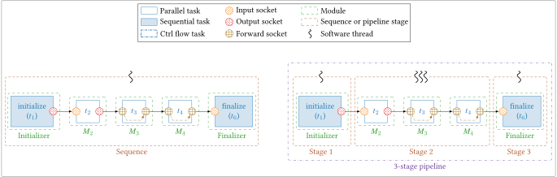

Pipeline¶
A pipeline is a feature offered by StreamPU allowing to split a
sequence into multiple stages. Each stage is executed
on one or more threads in parallel. The pipeline takes care of the
synchronizations between stages. This is achieved through an implementation
of a producer/consumer algorithm.

A pipeline is a C++ object of the spu::runtime::Pipeline class. The
following sections try to give an overview of the most important attributes and
methods to facilitate the code understanding.
Main Attributes¶
The original sequence from which the pipeline was created. Vector of the different stages in the pipeline. Each stage is a sequence.std::vector<std::pair<std::tuple<runtime::Socket*, size_t, size_t, size_t,size_t>,
std::tuple<runtime::Socket*, size_t, size_t, size_t>>> sck_orphan_binds;
input, output, priority) of the created adaptors,
priority is used to order the tuples.
Main Methods¶
This is the public method that runs the pipeline in loop. Other variants exist where it is possible to give a stop condition function.void init(const std::vector<runtime::Task*> &firsts,
const std::vector<runtime::Task*> &lasts,
const std::vector<std::tuple<std::vector<runtime::Task*>, std::vector<runtime::Task*>, std::vector<runtime::Task*>>> &sep_stages = {},
const std::vector<size_t> &n_threads = {},
const std::vector<size_t> &synchro_buffer_sizes = {},
const std::vector<bool> &synchro_active_waiting = {},
const std::vector<bool> &thread_pinning = {},
const std::vector<std::vector<size_t>> &puids = {});
This method creates the pipeline given:
- The first and last tasks of the original sequence (
firstsandlasts). - The first and last tasks of each stage (
sep_stages). - The number of threads to allocate to each stage (
n_threads). - The number of buffers between stages (
synchro_buffer_sizes). - The type of waiting for the adaptor tasks (
synchro_active_waiting).
Note
StreamPU doesn't support consecutive multi-threaded stages yet.
void create_adaptors(const std::vector<size_t> &synchro_buffer_sizes = {},
const std::vector<bool> &synchro_active_waiting = {});
pull & push tasks)
that are added between each stage to transmit data from the stage \(S\) to the
stage \(S+1\).
Adaptor module tasks pull & push need to be bound to each task in the two
consecutive stages, the target sockets to bind are stored in the vector
sck_orphan_binds.
Adaptor¶
spu::module::Adaptor is a special module automatically inserted between
stages when creating a pipeline and serve as "bridges" between them, they are
bound to first and last tasks of the consecutive stages. The purpose of adaptors
is to synchronize data exchange between each stage using pre-allocated buffer
pools. In other words, this is an implementation of the producer-consumer
algorithm. There are 4 tasks performed by adaptors:
push_1: when the \(S\) stage is executed on one thread and the \((S+1)\) stage is executed on multiple threads. The function gets an empty buffer and fills it with the data produced in the stage \(S\). The buffers are filled using a round-robin algorithm.pull_n: when the \(S\) stage is executed on multiple threads and the \((S-1)\) stage is on one thread. It is the task executed just after thepush_1, it takes a filled buffer from the inter-stage pool and forwards the data. There is apull_ntask for every thread of the stage.push_n: when the \(S\) stage is executed on multiple threads and the \((S+1)\) stage is on one thread. The task takes an empty buffer from the pool and fills it with the data produced by the thread. There is apush_ntask for each thread of the stage.pull_1: when the \(S\) stage is executed on one thread and the \((S-1)\) stage is on multiple threads, it's the task executed just after thepush_n. It takes filled buffers from the pool using the same round-robin algorithm aspush_1and forward the data.
Main Attributes¶
The inter-stage buffer pool size. Pointers to each buffer of the inter-stage pool.std::shared_ptr<std::vector<std::atomic<uint64_t>>> first;
std::shared_ptr<std::vector<std::atomic<uint64_t>>> last;
first is used to get the filled
buffers, and last for the empty ones.
Main Methods¶
These are the methods used to synchronize the buffer pool between the pipeline stages. When getting a buffer, the thread may sleep if there is no empty buffer available. When a new empty buffer will be available, the sleeping thread will be woken up.
Get a pointer to the first empty buffer in the pool (at indexlast).
Get a pointer to the first filled buffer in the pool (at index first).
Get a pointer to the first empty buffer in the pool, and replace this buffer
with a new one pointed by swap_buffer parameter.
Get a pointer to the first filled buffer in the pool, and replace this buffer
with a new one pointed by swap_buffer parameter.
The puller can wake up a push task if this one is waiting for an empty buffer.
The pusher can wake up a pull task if this one is waiting for an empty buffer.